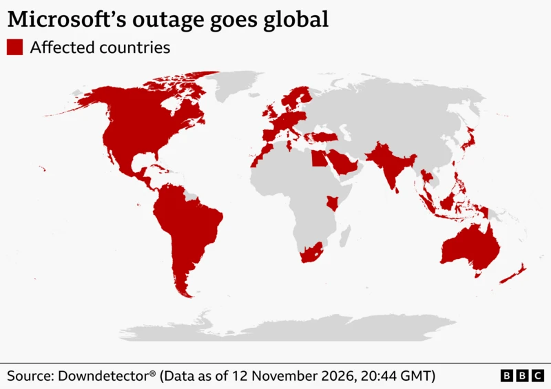

O ataque à APS e a queda da Microsoft
Neste vídeo nós estamos comentando ao vivo as repercussões e o que se sabe até o momento sobre o ataque ao Porto de Santos e a queda dos serviços da Microsoft.
Veja também no canal:
Ataque cibernético à APS e Porto de Santos

www.metropoles.comwww.metropoles.com
- Funcionários voltaram a trabalhar ‘analógicamente’ com papel e consultando sistemas do governo federal
- Foi um ataque ou não? Foi um ransomware? A recuperação de becapes sugere que sim. Um grupo assumindo o ataque pode ser ou não
- Vazaram dados ou não? Tem logs?
- Se foi um ataque qual o objetivo? O aumento do nível de segurança
- Acontecer depois da queda de energia é bem suspeito, parece filme slk. Mr. Robot total
Referências sobre ransomware:
- Ataque de Ransonware ao STJ: https://pt.wikipedia.org/wiki/Ataque_cibern%C3%A9tico_ao_Superior_Tribunal_de_Justi%C3%A7a
- Ataque de Ransomware às lojas Renner: https://tecnoblog.net/noticias/renner-explica-impactos-do-ataque-de-ransomware-a-pedido-do-procon-sp/
- Ataques ransomware no Brasil: https://ransomnews.com/ransomware-attacks/brazil/
- Ataques de ransomware por setor https://www.computerweekly.com/br/noticias/366654636/Brasil-o-4-pais-do-mundo-com-mais-ataques-de-ransomware
- Estatísticas da ANPD https://www.gov.br/anpd/pt-br/assuntos/fiscalizacao/resultados-da-fiscalizacao?utm_source=chatgpt.com
Office 365, Outlook, Teams, Copilot cairam


/https://i.s3.glbimg.com/v1/AUTH_59edd422c0c84a879bd37670ae4f538a/internal_photos/bs/2026/0/8/vXy4B4QqqAl1kWX5cyng/2026-10-19t140939z-1321957527-rc2b6oafi4nk-rtrmadp-3-nscale-data-center-microsoft.jpg)
A Microsoft negou que a falha em seus serviços seja provocada por um ataque cibernético e atribuiu o problema à "sobrecarga elevada" em sua infraestrutura.
…
No caso da falha da Microsoft, um grande número de servidores ficou "indisponível inesperadamente", segundo a empresa, o que sobrecarregou os servidores restantes.
- Em alguns países tivemos empresas que basicamente perderam um dia de trabalho